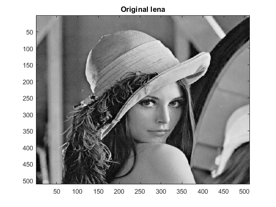
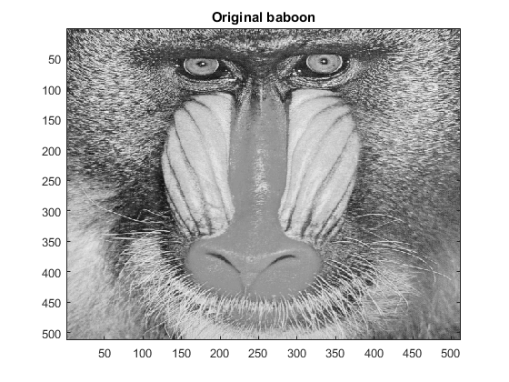
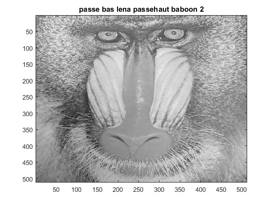
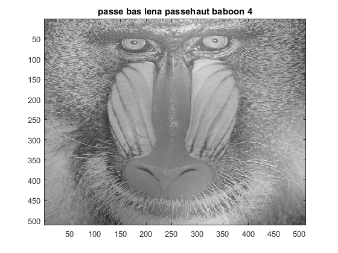
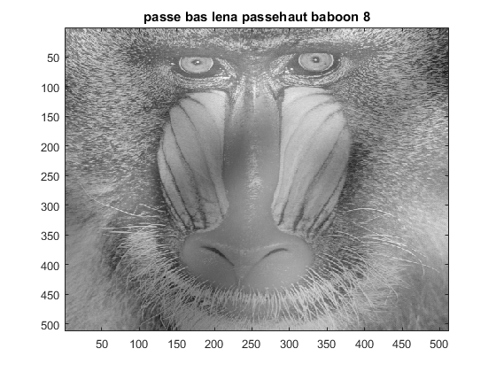
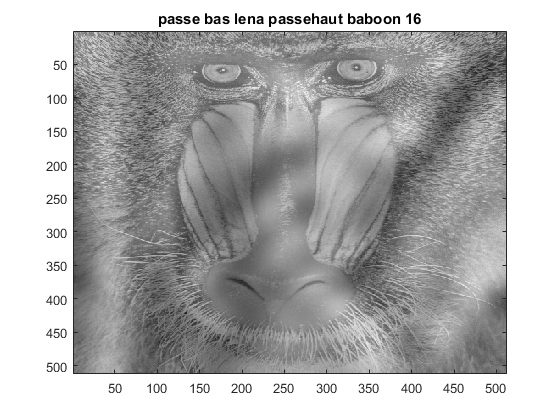
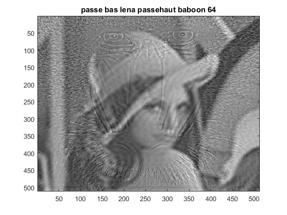
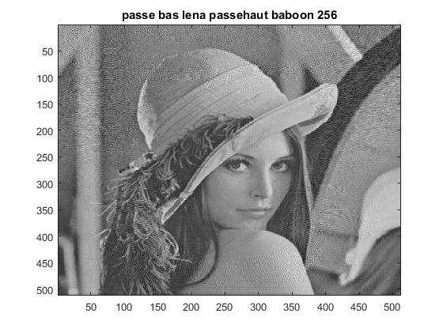

Contents
%*****************************************************************%% %** Mami FOFANA & Sanoussi FOFANA **% %** TP2 DCT transform **% %** Devoir N2 : Tronquage de deux images *%% %*****************************************************************%% clear all; close all; clc;
************* load Image ******************************************
lena = imread('lena.jpg'); lena = double(lena); lena_dct = dct2(lena); figure(); imagesc(lena); colormap(gray); title('Original lena'); baboon = imread('Baboon.jpg'); baboon = double(baboon); baboon_dct = dct2(baboon); figure(); imagesc(baboon); colormap(gray); title('Original baboon'); %*************************************************************************** 
************ Tronquage passeBas-lena passeHaut-baboon *************%%
%%************** k = 2, 4, 8, 16, 32, 64, 128, 256 ***********************%% %%%*********************************************************************%%%% %pb : passe bas* %ph : passe haut pb_lena_ph_baboon_dct2 = troncIm(lena_dct,baboon_dct,2); pb_lena_ph_baboon2 = idct2(pb_lena_ph_baboon_dct2); figure(); imagesc(pb_lena_ph_baboon2); colormap(gray); title('passe bas lena passehaut baboon 2'); pb_lena_ph_baboon_dct4 = troncIm(lena_dct,baboon_dct,4); pb_lena_ph_baboon4 = idct2(pb_lena_ph_baboon_dct4); figure(); imagesc(pb_lena_ph_baboon4); colormap(gray); title('passe bas lena passehaut baboon 4'); pb_lena_ph_baboon_dct8 = troncIm(lena_dct,baboon_dct,8); pb_lena_ph_baboon8 = idct2(pb_lena_ph_baboon_dct8); figure(); imagesc(pb_lena_ph_baboon8); colormap(gray); title('passe bas lena passehaut baboon 8'); pb_lena_ph_baboon_dct16 = troncIm(lena_dct,baboon_dct,16); pb_lena_ph_baboon16 = idct2(pb_lena_ph_baboon_dct16); figure(); imagesc(pb_lena_ph_baboon16); colormap(gray); title('passe bas lena passehaut baboon 16'); pb_lena_ph_baboon_dct32 = troncIm(lena_dct,baboon_dct,32); pb_lena_ph_baboon32 = idct2(pb_lena_ph_baboon_dct32); figure(); imagesc(pb_lena_ph_baboon32); colormap(gray); title('passe bas lena passehaut baboon 32'); pb_lena_ph_baboon_dct64 = troncIm(lena_dct,baboon_dct,64); pb_lena_ph_baboon64 = idct2(pb_lena_ph_baboon_dct64); figure(); imagesc(pb_lena_ph_baboon64); colormap(gray); title('passe bas lena passehaut baboon 64'); pb_lena_ph_baboon_dct128 = troncIm(lena_dct,baboon_dct,128); pb_lena_ph_baboon128 = idct2(pb_lena_ph_baboon_dct128); figure(); imagesc(pb_lena_ph_baboon128); colormap(gray); title('passe bas lena passehaut baboon 128'); pb_lena_ph_baboon_dct256 = troncIm(lena_dct,baboon_dct,256); pb_lena_ph_baboon256 = idct2(pb_lena_ph_baboon_dct256); figure(); imagesc(pb_lena_ph_baboon256); colormap(gray); title('passe bas lena passehaut baboon 256');     
FOnction troncIm :
Cette fonction prend en parametre deux , puis alloue une variable suplementaitre à fin de transiter les image : soiet A, B les deux paramètre , on choisit C une variable tel que C = A ; B = C .